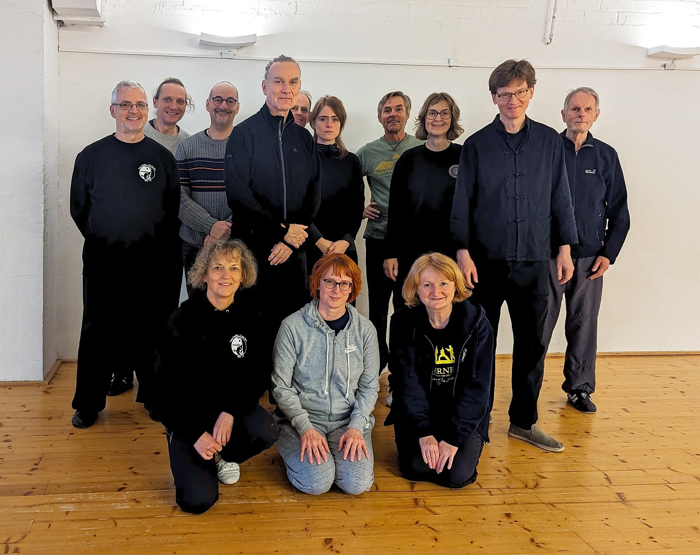

Aktueller Kursplan
15. November 2025: Ranking-Event
Nach langer Zeit fand in Köln wieder einmal ein Ranking statt, eine offizielle Prüfung in Theorie und Praxis, bei der die Prüflinge ihren Trainingsstand vor einer Jury vorführen und damit einen Rang in der Yang Family Tai Chi Chuan Association erringen können.

Unter den wachsamen Augen unserer Trainer:innen schaffte eine Person die Prüfung zum Kupfer-Adler (1. Rang) und fünf weitere Teilnehmer die Prüfung zum Silber-Adler (2. Rang). Ein Prüfling hat die Gelegenheit, seine Prüfung zum Gold-Adler (3. Rang) innerhalb eines Jahres erneut abzulegen.
Vorstand, Prüfer und Helfer gratulieren herzlich!
1. und 2. November 2025: Seminar mit Frank Grothstück
Anfang November hält Frank Grothstück ein 2-tägiges Wochenendseminar in der Turnhalle der Städtischen Katholischen Grundschule, Osterather Str. 13, ab. Für Mitglieder des Vereins ist die Teilnahme kostenlos! Andere Interessenten melden sich bitte direkt bei Frank per E-Mail.
Das Seminar beginnt am Samstag um 10 Uhr und endet am Sonntag um 14 Uhr. Auf dem Programm steht die lange 103er Form und Anwendungen.
31. August 2025: Sommerfest im Park
Zum Abschluss von "Kölle Aktiv" findet im Anschluss an das letzte öffentliche Training im Grüngürtel unser Sommerfest statt. Start ist gegen 12 Uhr. Treffpunkt: Carola Williams Park (nördlich vom Aachener Weiher).
Neue Trainingszeiten
Ab dem 14. Januar 2025 gelten für die Kurse am Dienstag neue Anfangszeiten! Beide Kurse beginnen dann früher. "Das Spiel der Fünf Tiere" startet um 9:15 Uhr, und Tuishou bereits um 10:45 Uhr.
Yang Jun kommt 2025 nach Berlin
Der Urenkel von Yang Chengfu, Meister Yang Jun, kommt Ende April 2025 nach Deutschland, um in Berlin ein Seminar zu geben. Vom 24.4. bis 29.4. haben Interessierte die Möglichkeit, etwas über die Theorie des Tai Chi zu lernen, sich in Hand- und Schwertform zu üben und das Tuishou/Push Hands kennenzulernen.
Ausgerichtet wird das Seminar vom Yang Chengfu Tai Chi Chuan Center Berlin und dessen Leiter Johannes Mergner. Nähere Informationen findet ihr bald auf dessen Seite.
Mitgliederversammlung 2024 und Weihnachtsfeier
Am Freitag, den 29. November, findet kein Training statt. An diesem Tag ist ab 18 Uhr unsere diesjährige Mitgliederversammlung mit der Wahl des neuen Vorstands. Im Anschluss lassen wir den Abend ab ca. 19 Uhr mit einer gemeinsamen Advents- bzw. Weihnachtsfeier ausklingen.
Ab Juli 2024: Zusätzlicher Trainingsort und -tag
Seit Ende Ende Juli verfügen wir über einen zusätzlichen Trainingsort: Die neugebaute Turnhalle der Katholischen Grundschule in der Osterather Str. 13 in Köln-Nippes, nur 350 Meter vom S-Bahnhof Köln-Nippes entfernt.
Dort stehen uns zwei neue Trainingszeiten zur Verfügung: im ersten Slot ab 19 Uhr bieten wir einen fortgeschrittenen Kurs in der Handform an, und der zweite Slot ab 20:30 Uhr ist im Moment noch offen.
Dezember 2023: Seminar mit Frank
Anfang Dezember kam Frank Grothstück (obere Reihe vierter v.l.) für ein zweitägiges Wochenendseminar zurück in die Görresstraße. Der ehemalige Gründer der Tai Chi-Schule am Rathenauplatz freute sich über das Wiedersehen seiner langjährigen Wirkensstätte und vertiefte mit uns in drei mehrstündigen Blöcken die drei Teile der Handform. Seine detaillierten Ausführungen waren wie immer für jede Erfahrungsstufe ein Gewinn!
Juli 2023: Sommerfest
Am Samstag, den 29. Juli 2023, treffen wir uns ab 15 Uhr auf der Uni-Wiese vor dem chemischen Institut (Luxemburger Straße) zum Sommerfest. Eine Kleinigkeit zu essen, Besteck und Geschirr, Sitzmöbel oder Decken bitte mitbringen. Getränke werden gestellt! Bei schlechtem Wetter weichen wir auf die Trainingshalle aus.
Januar 2023: Neujahrsfest
Am 22. Januar 2023 beginnt in China das Jahr des Hasen. Am Dienstag, den 24. Januar, wollen dieses Neujahrsfest mit einer kleinen Feier begehen! Treffpunkt dafür ist ab 20 Uhr die mediterrane Tapas-Bar "Meister Gerhard", Rathenauplatz 8. Der Unterricht vorher findet statt, allerdings verkürzt!
Oktober 2022: Neuer Anfängerkurs für die Lange Form (103er)
Seit Oktober 2022 läuft unser neuer Anfängerkurs für die Lange Handform. Beginn ist jeweils donnerstags um 17:45 Uhr. Neu- und Quereinsteiger sind noch herzlich willkommen. Neugierige können nach Absprache jederzeit eine Schnupperstunde bei uns besuchen.
Eine weitere Möglichkeit Tai Chi zu üben, besteht über das Videoangebot der Yang Family Tai Chi Chuan Association unter dem folgenden Link: